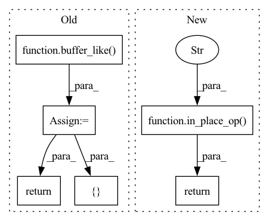

Pattern ID :25330

Before Change
@staticmethod
def backward(ctx, grad_output):
x,y,prg = ctx.saved_tensors
gx = buffer_like(ctx, x)
gy = buffer_like(ctx, y)
prg.mul(ctx.cl_queue, [gx.size//4], None, y, grad_output, gx)
prg.mul(ctx.cl_queue, [gy.size//4], None, x, grad_output, gy)
return gx, gy
register("mul", Mul, gpu=True)
class Sum(Function):
After Change
@staticmethod
def backward(ctx, grad_output):
x,y = ctx.saved_tensors
return in_place_op(ctx, "res_g[gid] = a_g[gid] * b_g[gid];", y, grad_output),\
in_place_op(ctx, "res_g[gid] = a_g[gid] * b_g[gid];", x, grad_output)
register("mul", Mul, gpu=True)
In pattern: SUPERPATTERN
Frequency: 3
Non-data size: 6
Instances
Fragment ID: 77537469
Project Name: geohot/tinygrad
Commit Name: 82fc842b40fe03742e4e56683788bf6fb2072956
Time: 2020-11-02
Author: geohot@gmail.com
File Name: tinygrad/opsgpu.py
M Class Name: Mul
N Class Name: Mul
M Method Name: backward(2)
N Method Name: backward(2)
M Parent Class: Function
N Parent Class: Function
M File Name: tinygrad/opsgpu.py
N File Name: tinygrad/opsgpu.py
M Start Line: 88
M End Line: 93
N Start Line: 66
N End Line: 67
'>
Before Change
class Sub(Function):
@staticmethod
def forward(ctx, x, y):
ret = buffer_like(ctx, x)
prg = cl.Program(ctx.cl_ctx,
__kernel void sub(
__global const float *a_g, __global const float *b_g, __global float *res_g)
{
int gid = get_global_id(0);
res_g[gid] = a_g[gid] - b_g[gid];
}
).build()
prg.sub(ctx.cl_queue, [np.prod(ret.shape)], None, x, y, ret)
return ret
@staticmethod
def backward(ctx, grad_output):
After Change
class Sub(Function):
@staticmethod
def forward(ctx, x, y):
return in_place_op(ctx, "res_g[gid] = a_g[gid] - b_g[gid];", x, y)
@staticmethod
def backward(ctx, grad_output):
// WRONG
'>
Fragment ID: 77537467
Project Name: geohot/tinygrad
Commit Name: 82fc842b40fe03742e4e56683788bf6fb2072956
Time: 2020-11-02
Author: geohot@gmail.com
File Name: tinygrad/opsgpu.py
M Class Name: Sub
N Class Name: Sub
M Method Name: forward(3)
N Method Name: forward(3)
M Parent Class: Function
N Parent Class: Function
M File Name: tinygrad/opsgpu.py
N File Name: tinygrad/opsgpu.py
M Start Line: 37
M End Line: 47
N Start Line: 40
N End Line: 40
'>
Before Change
class Add(Function):
@staticmethod
def forward(ctx, x, y):
ret = buffer_like(ctx, x)
prg = cl.Program(ctx.cl_ctx,
__kernel void add(
__global const float *a_g, __global const float *b_g, __global float *res_g)
{
int gid = get_global_id(0);
res_g[gid] = a_g[gid] + b_g[gid];
}
).build()
prg.add(ctx.cl_queue, [np.prod(ret.shape)], None, x, y, ret)
return ret
@staticmethod
def backward(ctx, grad_output):
After Change
class Add(Function):
@staticmethod
def forward(ctx, x, y):
return in_place_op(ctx, "res_g[gid] = a_g[gid] + b_g[gid];", x, y)
@staticmethod
def backward(ctx, grad_output):
return grad_output, grad_output
'>
Fragment ID: 77537466
Project Name: geohot/tinygrad
Commit Name: 82fc842b40fe03742e4e56683788bf6fb2072956
Time: 2020-11-02
Author: geohot@gmail.com
File Name: tinygrad/opsgpu.py
M Class Name: Add
N Class Name: Add
M Method Name: forward(3)
N Method Name: forward(3)
M Parent Class: Function
N Parent Class: Function
M File Name: tinygrad/opsgpu.py
N File Name: tinygrad/opsgpu.py
M Start Line: 17
M End Line: 27
N Start Line: 30
N End Line: 30